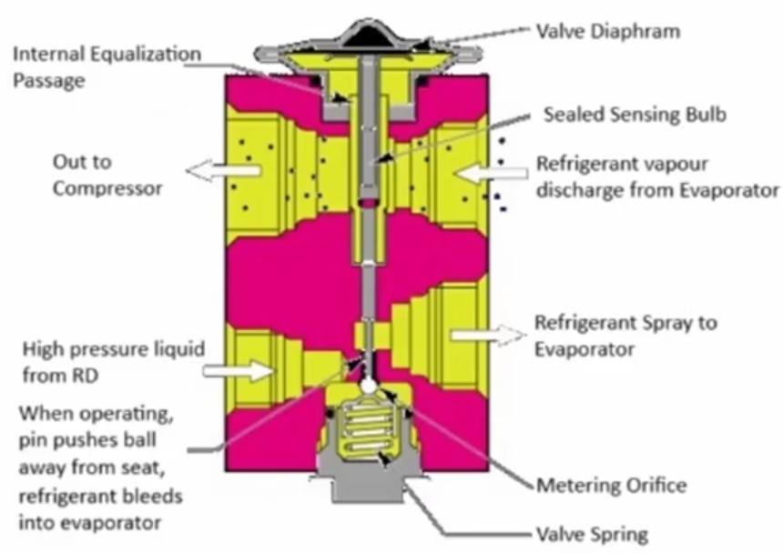

Variable metering device that responds to evaporator temperature and pressure. Provides precise control of superheat. More complex but better performance.
NOT INSTALLED IN BOBCAT MACHINES. Fixed orifice that provides constant pressure drop. Simple design, no moving parts. Less precise control but reliable and less expensive.
Mounted on evaporator housing. Can have bulb attached to suction line. Newer has built in control.
Thermal bulb senses evaporator outlet temperature. Capillary tube transmits pressure to power element. In the current design H-Block TXV, the bulb is built into the valve body and the capillary tube is eliminated.
When evaporator gets warmer, bulb pressure increases, opening valve more. When cooler, bulb pressure decreases, closing valve. Maintains constant superheat.
Balances pressure across valve. External equalizer connects to suction line downstream of bulb. Critical for proper operation.

Shine a light through the orifice. Use a heat gun to warm the power element of the TXV. This should open the orifice further. Use a upside-down can of dust spray to cool the power element. This should restrict the orifice further. If the valve does not respond, replace it.
Warm and cool the power element while monitoring low-side system pressure. Cooling the power element should cause the low-side pressure to drop fast into a vacuum. Heating the power element will cause the low-side pressure to rise. If the valve does not respond, replace it.
The TXV is responsible for maintaining proper refrigerant flow based on system load. Monitor low-side pressure and turn the heater on and off, changing the load, to assess its performance.
Check for damage, proper installation - sometimes it's possible to install backwords, leaks around the power element.
Always replace expansion device when compressor fails (metal contamination). Replace O-rings.